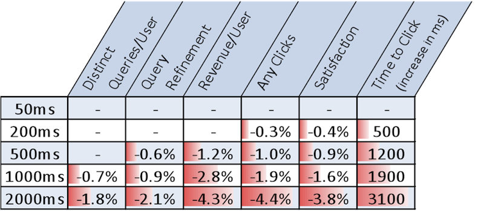
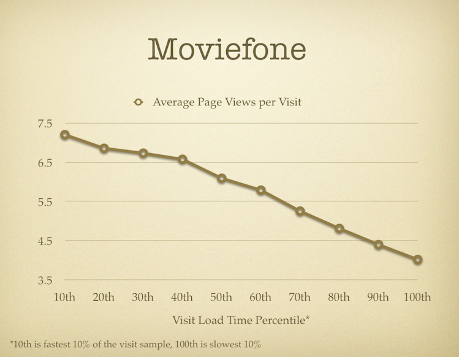
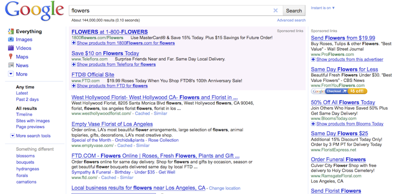

No one likes to wait and we all hate slow pages. These are obvious, easily observable facts that don't need any proof. And, as you'll see later in Chapter 9, which discusses the psychology of time and speed, waiting affects users in negative ways not only psychologically (they distrust the site, perceive it as lower quality) but also physiologically (they get irritable, their blood pressure increases). In the end, all the negative effects of slow web sites add up to a loss of users, loss of revenue and brand damage.
This chapter gives you practical industry examples and studies which expose the effects of performance on the bottom line. If you're not convinced that speed means money, read on. If you are convinced but your boss or client needs a proof, this chapter gives you the tools to "sell" performance and demonstrate that speed, indeed, matters.
Determining the relationship between page load time and business objectives has been a long-standing task for many performance professionals. The way to demonstrate this relationship would be to use the technique called split-testing (also known as A/B testing or bucket testing). You serve a page to a portion (a bucket) of your users, while at the same time serve a version of the page which looks exactly the same but is optimized for speed (or intentionally slower) to a different bucket of users. Then you measure the results - revenue, number of new users, subscriptions, conversions, or whatever the specific goal of the site may be - in each of the buckets. Turns out it's not so easy to conduct such experiments in practice. Not because is technically challenging, but because no one wants to penalize the users by slowing down their experience or intentionally not implementing a speed improvement for all users.
Luckily, some big names such as Google, Yahoo! and Microsoft have performed experiments and shared the data that shows the negative effects of slowing down pages.
Microsoft's live.com was just about to relaunch as the redesigned and rebranded bing.com. Since the old site was going away, Microsoft's researchers took the opportunity to perform an experiment. The experiment was slowing down the search result pages artificially before they were sent to the user.
They slowed down the page by various amounts from 50 milliseconds all the way to 2 seconds. The results showed a clear negative impact of the slower experience on all measured metrics - revenue, time to click, user satisfaction and others (Figure 1.1.)

In Microsoft's tests, the negative impact was changing roughly linearly to the amount of delay: the slower the page, the worse it got. They also noted that the "Time to Click" measurement was roughly double the artificial delay. That means that if your page is 1 second slower than it could be, your users will wait 2 more seconds before they interact with that page. During this time they might get distracted by other tasks or a phone ringing for example and never complete the task you would like them to.
And finally, talking about money, Microsoft's experiment showed that a one-second delay meant about 3% less revenue, while a two second delay reduced revenue by over 4%.
Similar experiments were done at Google and Yahoo! Search where the search results pages were artificially delayed. These experiments showed similar results.
Google's experiment in particular highlighted two additional points:
While the previous studies were only search-related, the negative impact of slow pages applies to most other types of pages and sites.
Another experiment was done at Yahoo! with a portal type of page. As soon as
the page was delayed by 0.4 seconds, there was a drop in the full-page
traffic of anywhere between 5% and 9% (depending on browser and user's
connection speed). Drop in full-page traffic means that users were leaving the
page before it loaded completely (before the onload event fires).
Users were either hitting the Back button or clicking away from
the page refusing to wait for it to load.
At AOL, the performance researchers performed another study: this time not using artificial delays, but simply plotting the relation between the speed of a page and the amount of traffic it gets.
The results, shown on Figure 1.2., show that there's a clear connection: the slower the page, the fewer views it gets during a user's visit.

Figure 1.2. shows the results for one of AOL's properties called Moviefone, but similar results were observed across the other measured properties: AOL Money and Finance, AOL Sports, and AOL Shopping.
While the previous examples demonstrated the devastating effects of slowing down pages, it's even more interesting to see what happens when you successfully improve page load times.
Mozilla's website has several dedicated landing pages for users interested in downloading Firefox. One of the most popular is a page designed for Internet Explorer users to download Firefox. This is a good case where one might think that page load time doesn't matter all that much. After all, if you end up on a download page, you've most likely already decided to download. Turns out this is not the case.
Developers at Mozilla succeeded in speeding up the page by an average of 2.2 seconds, then used A/B testing and measured the two versions of the same page served to different users. The results were staggering: on the faster page conversions increased by 15.4%. That translates to over 10 million more downloads a year. After performing similar optimizations on the other top landing pages, Mozilla estimates 60 million more downloads per year, just because of improved page loading speed - with no other changes to the page's design or functionality.
The e-commerce site shopzilla.com also reported impressive benefits from speeding up their web site. After they rebuilt their site focusing on performance, the page loading times went from around 6 seconds down to 1.2 seconds. As a result a number of important metrics improved:
At the same time, as a side effect of the performance improvements, they were able to reduce their costs of operation. The required infrastructure to support the site was cut in half and the estimated cost for each release dropped from thousands of dollars down to $80.
In other words they saved money while at the same time making more money.
In April 2010 Google announced that page speed has become one of the ranking factors in the order of displaying search results. Since Google's aim is to serve the best results to the user, in this case they act as advocates to the user. Given two pages that offer the same quality of matches to the user's query string, Google will display the faster one higher in the list of results, because this is actually the page that the user would prefer to see if given a choice.
This means that performance is now an essential part of any SEO (Search Engine Optimization) effort. And everything you've read about the importance of SEO also applies to performance optimization.

Page loading times affect the bottom line, the user satisfaction and happiness, SEO and many other factors for the success of a web site. It is therefore critical to no longer consider performance as an afterthought, a nice-to-have or a part of the post-launch activities.
The best strategy is to consider speed as a feature just like one of the other features and cool widgets on your site.
Fred Wilson is a well-known VC (venture capitalist) and investor in companies such as Twitter, del.icio.us and Zynga. When he gives advice to startups, he puts speed as the number one in his "10 Golden Principles of Successful Web Apps". The companies in his portfolio are being monitored for loading speed and are checked on a weekly basis. VC's have noticed that if a company's web site slows down, that usually coincides with slowing down the growth of the company's business.
In his own words at the "Future of Web Apps" conference in 2010: "There is real empirical evidence that substantiates the fact that speed is more than a feature. It's a requirement."
The reason Google includes page loading time in search rankings, both paid and unpaid, is because they've noticed the effects of speed while building their own web sites. They claim that speed has been a differentiator since the very beginning of Google search. They've noticed the negative effects of slowing down, the positive effects of speeding up, and have reportedly established speed as the most important feature of any product they build.
Consider these two quotes that illustrate Google's position on building sites and applications optimized for speed:
This chapter provided you with data and quotes you may need to convince and train bosses, co-workers and clients about the importance of performance.
As an additional tool, you can download a PowerPoint version of this chapter. The presentation is unstyled so that it's easier to brand with your own company template and present to anyone not yet convinced that speed matters.